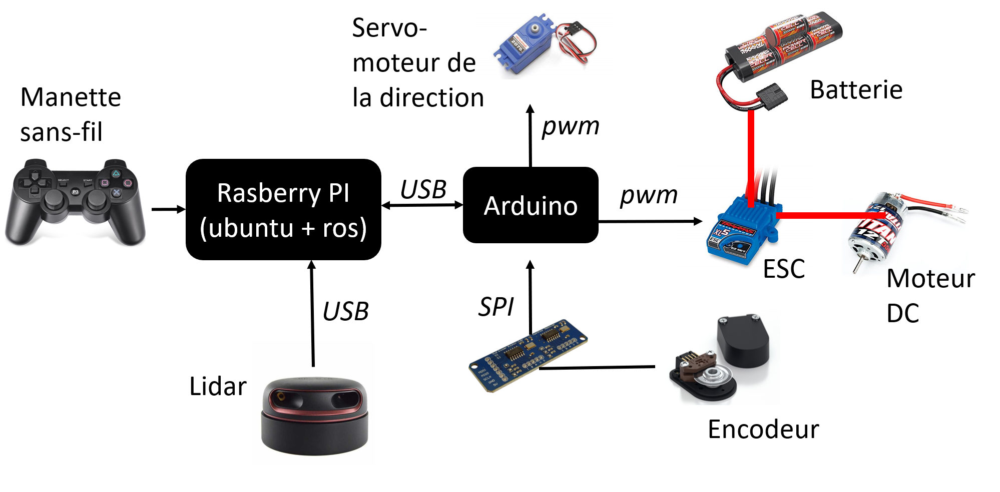

Abstract
The UdeS Racecar is a flexible and open autonomous car platform developed for research and teaching at the Université de Sherbrooke. Based on a Traxxas Slash 1/10 chassis, the platform is now powered by ROS 2 (Humble) and Python 3.8.
The architecture features a hybrid approach: a low-level Arduino microcontroller for fast prototyping of real-time control laws, and a high-level ROS-based computer for sophisticated perception and motion planning algorithms.
Key Features
- Advanced Control Modes: High-level support for open-loop and closed-loop (velocity/position) control of propulsion and steering.
- Simulation Support: Full integration with the Gazebo simulator for virtual environment testing.
- Web Interface: Built-in web-based dashboard for real-time monitoring and teleoperation.
- Open Source & Open Hardware: Fully documented software stack and publicly available CAD models.
Resources & Code
Project Media
Prototypes

Hardware

Architecture